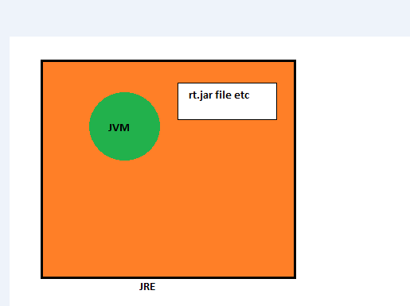
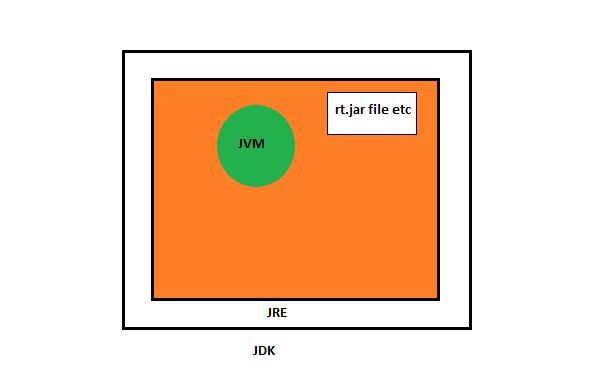

Difference between JDK,JRE and JVM
It is one of the common java interview questions and this article will explain each one of these and what is the difference between them.
JDK(Java Development Kit)
Java Development Kit contains two parts. One part contains the utilities like javac, debugger, jar which helps in compiling the source code (.java files) into byte code (.class files) and debug the programs.
The other part is the JRE, which contains the utilities like java which help in running/executing the byte code. If we want to write programs and run them, then we need the JDK installed.
Javac(Java Compiler)
javac is the executable/application which compiles the .java source files into the byte code (.class files). javac is included in JDK.
JRE(Java Runtime Environment)
Java Run-time Environment helps in running the programs. JRE contains the JVM, the java classes/packages and the run-time libraries. If we do not want to write programs, but only execute the programs written by others, then JRE alone will be sufficient.
JVM(Java Virtual Machine)
Java Virtual Machine is important part of the JRE, which actually runs the programs (.class files), it uses the java class libraries and the run-time libraries to execute those programs. Every operating system(OS) or platform will have a different JVM.
JIT(Just In Time Compiler)
JIT is a module inside the JVM which helps in compiling certain parts of byte code into the machine code for higher performance. Note that only certain parts of byte code will be compiled to the machine code, the other parts are usually interpreted and executed.
JRE Architecture

JDK Architecture
